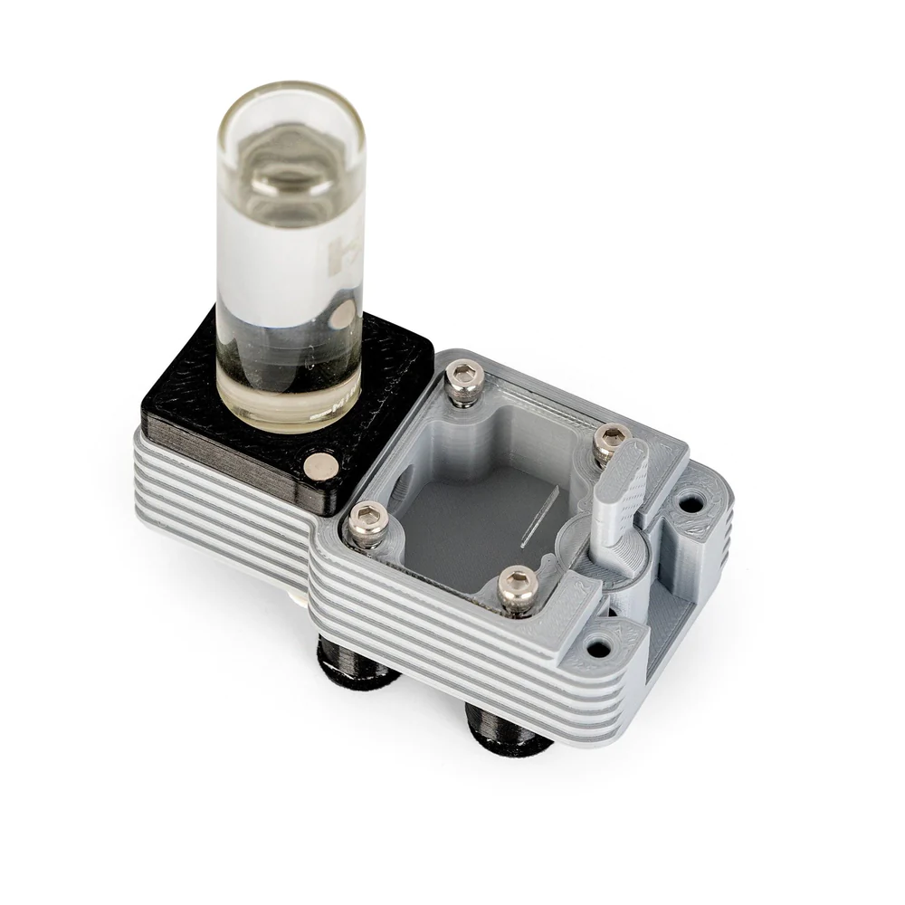

-
HORMIGUERO BIRTH
MÓDULO HORMIGUERO BIRTH
$900.00
MÓDULO HORMIGUERO BIRTH
Presentamos el "Módulo Hormiguero Birth": el hormiguero perfecto para hormigas reina solitarias y pequeñas colonias. Diseñado pensando en la comodidad del criador, este hormiguero modular es la mejor opción para empezar tu colonia de hormigas.
Una de las características más destacadas del "Módulo Hormiguero Birth" es su sistema de humedad regulable, conocido como "HydroX". El sistema es fácilmente desmontable gracias a su sistema de imanes de alta calidad, y las hormigas pueden beber directamente de él. El hormiguero también incluye patas antideslizantes y antivibración, y una compuerta rotatoria en la conexión para una fácil expansión.
El hormiguero también es extremadamente resistente, con tuercas y tornillos de acero inoxidable integrados en su diseño para una larga vida útil. El hormiguero está disponible en una variedad de diseños de galerías, incluyendo galerías individuales y dobles, para adaptarse a las necesidades de fundación de las diferentes especies de hormigas.
El "Módulo Hormiguero Birth" está disponible en dos colores, blanco mate y gris mate, proporcionando una excelente visibilidad sin reflejos. Las dimensiones del hormiguero son de 7.3 x 3.9 cm, lo que lo hace fácil de mover y colocar.
Con su diseño excepcional y materiales de alta calidad, el "Módulo Hormiguero Birth" es el hogar perfecto para su colonia.
Por favor, ten en cuenta que es importante no estresar a las hormigas reina y pequeñas colonias con demasiada exposición a la luz. Para ayudar a minimizar el estrés extra causado al destapar la tapa negra, puedes elegir colocar una tapa transparente roja y encima la negra mate. Recomendamos revisar a la reina no más de una vez cada dos semanas y solo durante unos segundos.